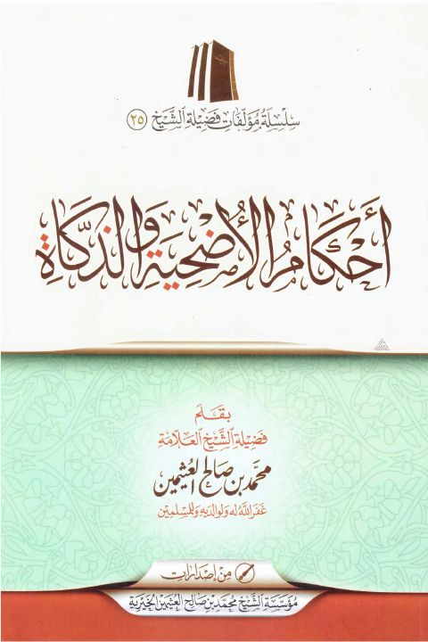

Downloads need an internet connection.
أحكام الأضحية والذكاة
Authors: محمد بن صالح العثيمين
Publishers: مؤسسة الشيخ العثيمين الخيرية
**▫️ العنوان: أحكام الأضحية والذكاة** ▪️ المؤلف: #محمد_بن_صالح_العثيمين ▫️ الناشر: #مؤسسة_الشيخ_العثيمين_الخيرية ▪️ تاريخ النشر: 1435هـ 2014م ▫️ بلد النشر: الرياض، #السعودية ▪️ الطبعة: 5 ▫️ عدد الأجزاء: 1 ▪️ الصفحات: 113 ▫️ نوع الوعاء: #كتاب ▪️ التصنيف الرئيسي: #الفقه_وأصوله ۪